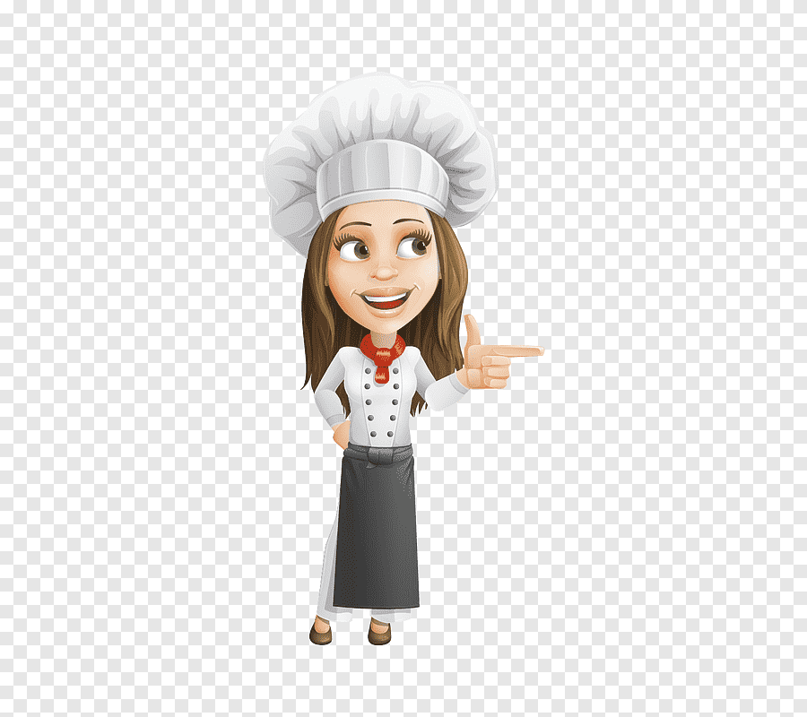
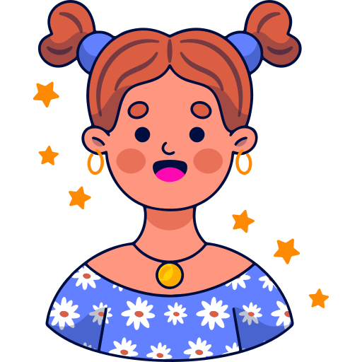
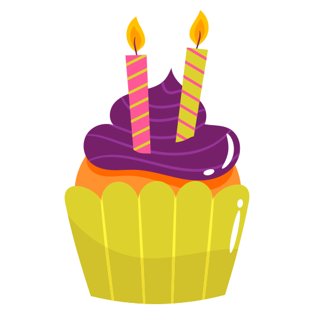

Псевдокласс стану ":hover". Зпрацює лише при наведенні, характеризує стан калсу саме в данмй момент при наведенні
Для прикладу наведи на кружечки
Псевдоклас стану класу, які вже були відвідані, наприклад для силок, как користувач бачить де він вже був ":visited" т.б. зпрацювує для відвіданий лінок наприклад
Псевдоклас ":focus": зпрацьовує на фокусуванні елемента
Псевдоклас ":target": зпрацювуэ коли елемент э тим елементом, на який посилаються
Командування завдяки "псевдокласам та псевдоелементам"
№1. Сервіс – це один із найголовніших критеріїв вибору ресторану для весільного банкету. Тут я радила б зробити так: оберіть для себе 3 найголовніших претенденти і підіть туди, як звичайні гості. Так ви зможете побачити в загальному місце, скуштувати меню, на основі якого пізніше будете складати весільне меню, і відчути себе в ролі звичайного клієнта, побачити на практиці як до вас будуть ставитися на весіллі офіціанти та адміністратори.
№2.Меню подається спочатку жінкам, а потім чоловікам. Якщо до вас приходить сім'я з дитиною, то офіціант, насамперед, пропонує дитині спеціально складене дитяче меню (якщо воно у вас є). Поки малюк зайнятий вивченням барвистого буклету, його батьки спокійно ознайомляться з меню для дорослих і виберуть страви для себе. Приймати замовлення слід у тій самій послідовності – спочатку від жінок, потім від чоловіків. Якщо за столом присутні діти, замовлення слід прийняти спочатку від них.
№3. Про що слід подумати власникові кав’ярні, кафе чи ресторану – це контроль потоку клієнтів. Часто, заходячи у заклад, людина почувається розгубленою. Особливо, якщо заклад великий, доводиться ходити по залах у пошуках вільного місця. Це вирішується просто! У закладах з високим рівнем сервісу завжди напоготові є адміністратор або хостес. У крайньому разі це може бути просто черговий офіціант. Тобто людина, яка зустрічає вас на порозі, розповідає про наявність вільних місць і цікавиться наявністю резерву, якщо всі місця зайняті, розповідає про зали та підбирає столик, який би мав бути найзручнішим для гостей, пропонує дитяче крісло або інші речі. Ця процедура допоможе приділити кожному гостю необхідну увагу.
№4. Після того, як гості вибрали столик і сіли, повинен підійти офіціант. Основне, на чому наголошують експерти – офіціанти не повинні бути безликими машинами для запису замовлення та пересувними механізмами для перенесення тарілок! Вони повинні стати гостинними господарями для своїх гостей – бути ввічливими, точними і ненав'язливими.
№5. Меню подається відкритим на першій сторінці відкритою рукою. Якщо гість заздалегідь знає ті страви, які хотів би замовити, меню слід відкрити на потрібній сторінці.
№6.Замовлення повинно відбуватися при повній підтримці офіціанта. У цьому йому допоможе знання меню. Замовлення повинно відбуватися при повній підтримці офіціанта. У цьому йому допоможе знання меню. Не тільки вміння перерахувати страви, а й розуміння сполучуваності інгредієнтів та страв. Офіціант повинен знати особливості кожної страви, його смакові якості і «сумнівні» інгредієнти (наприклад, часник, кінза, гострий червоний перець).Не тільки вміння перерахувати страви, а й розуміння сполучуваності інгредієнтів та страв. Офіціант повинен знати особливості кожної страви, його смакові якості і «сумнівні» інгредієнти (наприклад, часник, кінза, гострий червоний перець). Замовлення повинно відбуватися при повній підтримці офіціанта. У цьому йому допоможе знання меню. Не тільки вміння перерахувати страви, а й розуміння сполучуваності інгредієнтів та страв. Офіціант повинен знати особливості кожної страви, його смакові якості і «сумнівні» інгредієнти (наприклад, часник, кінза, гострий червоний перець).
№7. Досвідчений і уважний офіціант не заплутається при прийомі замовлення, задасть уточнюючі питання з приводу напоїв і страв, запропонує соуси і гарніри, уточнить черговість подачі страв і обов'язково розкаже про час приготування.
Как выбрать хороший ресторан?
- чим раніше
- прям додому
- відгуки
- перевірка
- фінальна оцінка


Знайти, хто мешкає на веселці?

let's go
Я тут живу